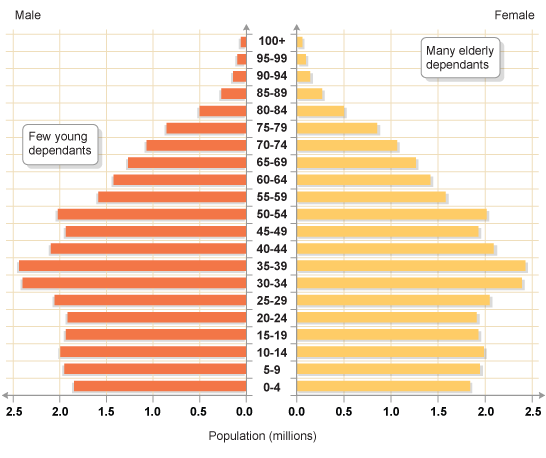
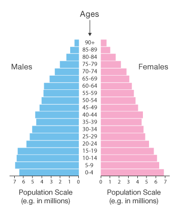
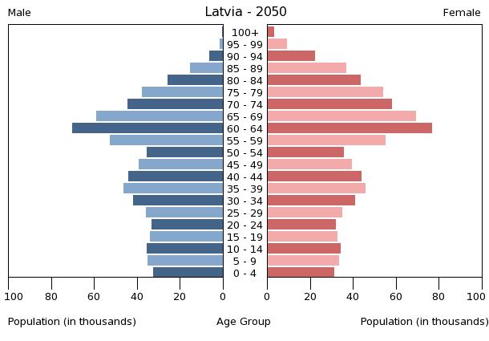

Description
Population pyramid is a graph that consists of back-to-back, pair of histograms for each sex that displays the distribution of different age groups of a certain population. The population plotted on the X-axis and age on the Y-axis, one showing the number of males and one showing females in a particular population in five-year age groups. They may be measured by raw number or as a percentage of the total population.
Video: Population pyramids: Powerful predictors of the future - Kim Preshoff
The graph of a growing population is shaped like a pyramid. It often considered as the most effective way to visualize the age and sex distribution of a population. A lot of information about the population broken down by age and sex can be read from a population pyramid, and this can shed light on the extent of development and other aspects of the population. A population pyramid also tells how many people of each age range live in the area. There tends to be more females than males in the older age groups, due to females' longer life expectancy. Population Pyramids can also be used to speculate a population's future development.
For example, a pyramid with a very wide base and a narrow top section suggests a population with high fertility and death rates. So population of that group is on a growing trend. 
Whereas, a pyramid with a wider top half and narrower base suggests an ageing population with low fertility rates. The total population of that group might decline in the future.
Although population is very useful, it still has some disadvantages in interpreting data:
- Only used to show population structure
- Figures are age-cohorts so some detail is lost in the data
- Doesn’t allow direct comparisons between the two categories
- Violates the standard expectation of having the causal variable on the x-axis
Examples
Interactive Graph: Pyramid of the World from 1950 to 2100